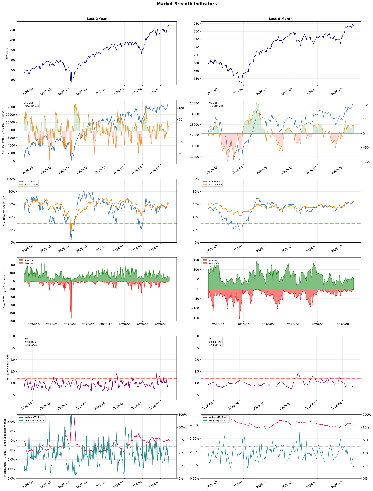

A daily market breadth and sector rotation report for active investors
| Item | Read |
|---|---|
| Regime | Risk-On |
| Risk posture | Aggressive |
| Universe | 1,334 stocks tracked · 53 new 52-week highs · 30 active swing setups |
| Breadth | 65.1% of tracked stocks are above SMA50, new highs exceed new lows (53 vs 4) |
| Leadership | Computer Hardware, Diagnostics & Research, and Health Information Services |
| Weakest groups | Solar, Chemicals, and REIT - Diversified |
Use this report to prioritize research and chart review; validate entries, stops, liquidity, earnings, and risk before acting.
| Item | Read |
|---|---|
| Primary read | Risk-On regime with Aggressive risk posture. |
| Research queue | UMAC, P, SMCI, RGTI, VELO |
| Leadership focus | Computer Hardware, Diagnostics & Research, and Health Information Services |
| Caution list | Solar, Chemicals, and REIT - Diversified |
| Review prompt | Check extension risk, chart location, fundamentals, valuation, and earnings before using any research row. |
| Item | Read |
|---|---|
| Primary read | 0 active risk warnings; use screen output as watchlist input only. |
| Bullish screens | HTFL, PSX, FLYW, RELY, AVAH |
| Bearish screens | none |
| Alerts / levels | Automated trigger, stop, ATR, liquidity, reward/risk, and event-risk levels are pending future enrichment. |
| Review prompt | Open the linked chart, define trigger and invalidation, then check liquidity and event risk independently. |
Risk Posture: Aggressive — screen backdrop shows broad participation; still validate each setup independently
Metric context: McClellan below -50 = elevated selling pressure; below -100 = washout territory. Range Expansion = share of stocks with daily range above their 20-day average. Signal Density = share of tracked names appearing in signal screens.
| Breadth Date | % > SMA50 | % > SMA200 | New Highs | New Lows | McClellan | Median Range | Avg Range | Median ATR14 | Range Expansion | Signal Density |
|---|---|---|---|---|---|---|---|---|---|---|
| 2026-08-14 | 65.1% | 64.0% | 53 | 4 | 28.0 | 2.7% | 3.3% | 4.0% | 17.8% | 4.0% |

Prior comparison date: August 13, 2026
| Metric | Prior | Current | Change |
|---|---|---|---|
| Regime | Risk-On | Risk-On | unchanged |
| Risk Posture | Aggressive | Aggressive | unchanged |
| % > SMA50 | 62.6% | 65.1% | +2.6 pts |
| % > SMA200 | 63.4% | 64.0% | +0.6 pts |
| New Highs | 58 | 53 | -5 |
| New Lows | 1 | 4 | -3 |
Top-10 industries entering: Medical Care Facilities. Top-10 industries leaving: Asset Management. New multi-signal long setups: ABCL, ARMK, AVAH, BBIO, COHU, EBC, EXPE, FHN, FLYW, HTFL. New multi-signal short setups: none.
| Status | Tickers | Read |
|---|---|---|
| Added | ABCL, ARMK, AVAH, BBIO, COHU, EBC, EXPE, FHN | New technical screen matches vs prior report. |
| Removed | AMBP, ASB, DELL, DXCM, ENTG, GILD, HOMB, HPE | No longer present in today's technical screen matches. |
| Still Active | AMT, APPS, BNS, CMBT, FBP, FSLY, MRP, PSX | Appeared in both current and prior reports. |
| Promoted | none | Model Screen Score improved by at least 15 points. |
| Downgraded | none | Model Screen Score declined by at least 15 points. |
| Direction | Industry | ETF | Prior Rank | Current Rank | Days | Rank Change |
|---|---|---|---|---|---|---|
| Rose | Copper | COPX | 84 | 15 | 35 | +69 |
| Rose | Gold | GDX | 86 | 19 | 42 | +67 |
| Rose | Oil & Gas Integrated | XLE | 84 | 25 | 42 | +59 |
| Rose | Electronic Components | XLK | 71 | 13 | 14 | +58 |
| Rose | Computer Hardware | XLK | 54 | 1 | 28 | +53 |
Bull: Copper is experiencing a rise in relative strength primarily due to its critical role in the electrification and AI boom, as highlighted in the headlines discussing COPX as a key investment in the "electrification squeeze" and the "pick-and-shovel AI trade." The increasing demand for copper, driven by its applications in electric vehicles, renewable energy infrastructure, and advanced technologies, positions it as a strategic asset, especially as Wall Street begins to recognize its potential, evidenced by the significant price appreciation noted in the headlines. Additionally, the recent performance of Canadian mining stocks suggests a robust supply chain and production capability, further supporting the bullish outlook for copper investments.
Bear: While the bullish narrative around copper's role in electrification and AI is compelling, it overlooks several critical headwinds that could dampen demand and pricing. The recent surge in copper prices may be more reflective of speculative trading rather than sustainable demand, especially as economic uncertainties loom and potential recessions could lead to decreased industrial activity. Furthermore, the mining sector faces significant challenges, including regulatory hurdles, rising operational costs, and environmental concerns, which could hinder production and ultimately limit the supply needed to meet projected demand.
Verdict: The rising trend in copper prices is fundamentally driven by its essential role in the electrification and AI boom, with increasing demand from electric vehicles and renewable energy infrastructure supporting its status as a strategic investment. However, investors should remain cautious of the bear case, which highlights risks such as potential economic slowdowns that could dampen industrial demand and significant challenges within the mining sector, including regulatory and operational hurdles that may limit supply growth. Therefore, while the bullish outlook remains strong, it is crucial to monitor macroeconomic indicators and industry-specific risks closely.
Sources: Yahoo Finance, Google News
Bull: Gold's rising relative strength can be attributed to increased investor interest as evidenced by the headline "Investors Are Betting Big on Gold Again," indicating a renewed confidence in the asset as a safe haven amidst market volatility. Additionally, the focus on major gold mining companies like Newmont and Barrick in the context of a sector rally suggests that strong fundamentals and potential for upside in gold prices are driving investment flows into the gold sector, as highlighted by the "Gold's Rally Lifts The Sector" discussion. This trend is further supported by the contrast with silver, where the debate over whether silver ETFs might offer better value indicates that gold remains a preferred choice for risk-averse investors in uncertain economic times.
Bear: While the rising relative strength of gold may suggest increased investor interest, it is crucial to recognize that this trend could be driven more by short-term market sentiment rather than sustainable fundamentals. The headlines indicating a shift towards silver as a potentially better buy highlight a growing skepticism about gold's long-term value, especially as investors diversify into other assets amidst economic recovery. Additionally, the recent slump in mining stocks, as noted in the ASX 200, raises concerns about the profitability and operational challenges faced by major gold producers, which could undermine the bullish narrative surrounding gold investments.
Verdict: The gold industry's rising trend is fundamentally driven by increased investor interest in safe-haven assets amid ongoing market volatility and economic uncertainty, as evidenced by strong performances from major mining companies like Newmont and Barrick. However, a key risk to this bullish outlook is the potential for short-term sentiment shifts and the growing skepticism surrounding gold's long-term value, particularly as investors explore alternative assets like silver, which could dilute demand for gold. Investors should remain vigilant about market dynamics and consider diversifying their portfolios to mitigate risks associated with potential downturns in gold prices.
Sources: Yahoo Finance, Google News
Bull: The Oil & Gas Integrated sector is experiencing rising relative strength primarily due to increasing fair value estimates for major oil stocks, driven by higher oil prices as indicated by Morningstar. Additionally, the positive sentiment reflected in multiple headlines about energy stocks rising suggests strong investor confidence, bolstered by a potential economic isolation of Iran, which could limit supply and further support prices. This combination of favorable market dynamics is positioning the sector for continued growth, making it an attractive investment opportunity.
Bear: While the rising relative strength and increased fair value estimates for major oil stocks may seem promising, these trends could be misleading in the context of broader economic uncertainties and potential demand destruction. The bullish sentiment may overlook the risks posed by geopolitical tensions, regulatory pressures for a transition to renewable energy, and the possibility of a global recession that could dampen oil demand. Furthermore, the recent headlines may reflect short-term market movements rather than a sustainable long-term growth trajectory, making the sector vulnerable to sharp corrections.
Verdict: The Oil & Gas Integrated sector's rising relative strength is fundamentally driven by increasing oil prices and favorable fair value estimates for major oil stocks, fueled by investor confidence amid geopolitical tensions, particularly regarding Iran. However, investors should remain cautious of potential demand destruction stemming from economic uncertainties and regulatory pressures towards renewable energy, which could lead to significant market corrections if these risks materialize.
Sources: Yahoo Finance, Google News
Bull: The Electronic Components sector is experiencing a rise in relative strength due to a sector-wide rally, as evidenced by Sanmina's 5.5% jump amid positive market sentiment. Additionally, the mixed performance of broader U.S. equities, highlighted in recent headlines, suggests that investors are seeking stability and growth in sectors like electronic components, which are crucial for technological advancements and manufacturing. The focus on ETFs that are expected to pay off soon indicates a shift towards sectors with strong fundamentals, further supporting the bullish outlook for electronic components.
Bear: While the recent rally in the electronic components sector, exemplified by Sanmina's 5.5% jump, may seem promising, it is essential to consider the broader economic context and potential headwinds. The mixed performance of U.S. equities, coupled with concerns about economic isolation and geopolitical tensions, could lead to volatility and uncertainty in the sector. Additionally, the focus on ETFs that may "pay off soon" could indicate speculative behavior rather than solid fundamentals, suggesting that investors might be overestimating the sustainability of this rally in the face of potential economic downturns or supply chain disruptions.
Verdict: The electronic components sector's recent rise is primarily driven by increasing demand for technology and manufacturing solutions, as evidenced by strong performances from companies like Sanmina. However, investors should remain cautious of potential risks, including economic isolation and geopolitical tensions, which could introduce volatility and undermine the sustainability of this rally. It's advisable to closely monitor macroeconomic indicators and supply chain stability before making investment decisions in this sector.
Sources: Yahoo Finance, Google News
Bull: The rising relative strength of the Computer Hardware sector can be attributed to the increasing focus on advanced technologies such as quantum computing and artificial intelligence, as highlighted by multiple headlines emphasizing the best stocks to buy in these areas. Additionally, the mixed performance of broader equity markets, as noted in the headlines, suggests that investors are seeking stability and growth in sectors poised for innovation, further driving demand for hardware essential to support these emerging technologies.
Bear: While the rising relative strength of the Computer Hardware sector may seem promising, it is crucial to recognize that much of the current enthusiasm is speculative, driven by hype around quantum computing and AI rather than solid fundamentals. Additionally, the mixed performance of broader equity markets indicates underlying economic uncertainty, which could lead to reduced consumer and enterprise spending on hardware as companies prioritize cost-cutting measures amid potential recessionary pressures. This volatility could undermine the long-term growth prospects of the sector, making it a risky investment.
Verdict: The Computer Hardware sector is experiencing rising strength primarily due to heightened demand for advanced technologies like quantum computing and AI, which are driving investment in hardware that supports these innovations. However, investors should be cautious of the speculative nature of this enthusiasm, as economic uncertainty and potential recessionary pressures could lead to reduced spending on hardware, posing a significant risk to the sector's long-term growth. It is advisable to focus on companies with strong fundamentals and a clear path to profitability amidst these trends.
Sources: Yahoo Finance, Google News
| Direction | Industry | ETF | Prior Rank | Current Rank | Days | Rank Change |
|---|---|---|---|---|---|---|
| Fell | REIT - Healthcare Facilities | XLRE | 7 | 79 | 28 | -72 |
| Fell | REIT - Retail | N/A | 9 | 76 | 28 | -67 |
| Fell | REIT - Hotel & Motel | XLRE | 1 | 66 | 35 | -65 |
| Fell | Footwear & Accessories | N/A | 21 | 85 | 35 | -64 |
| Fell | Leisure | N/A | 9 | 71 | 14 | -62 |
Bear: While broader market volatility can influence sector performance, the recent decline in relative strength for Healthcare Facilities REITs may indicate deeper, sector-specific issues, such as rising operational costs, regulatory pressures, and potential decreases in demand for certain healthcare services due to changing demographics and reimbursement models. Furthermore, the 5.2% drop in American Healthcare REIT amidst sector-wide selling suggests that investor confidence is waning not just due to external market factors, but also due to fundamental concerns about the sustainability and profitability of healthcare real estate investments in the current economic climate.
Bull: The recent decline in relative strength for the Healthcare Facilities REIT sector appears to be largely driven by broader market volatility, particularly within the financial sector, as indicated by multiple headlines highlighting fluctuations in financial stocks. This sector-wide selling pressure, exemplified by American Healthcare REIT's 5.2% drop, may have negatively impacted investor sentiment towards healthcare REITs, despite the potential for long-term growth highlighted in articles discussing the best healthcare REIT stocks for 2026. Additionally, the overall uncertainty in the market could be causing investors to shift their focus away from healthcare facilities, even as they remain a crucial component of the real estate landscape.
Verdict: The recent decline in the Healthcare Facilities REIT sector is likely driven by a combination of broader market volatility and sector-specific challenges, including rising operational costs and regulatory pressures that may threaten profitability. Investors should be cautious, as the bear case highlights the risk of waning demand for healthcare services and potential shifts in reimbursement models, which could further undermine confidence in the sustainability of these investments. It may be prudent to closely monitor operational metrics and regulatory developments before making investment decisions in this sector.
Sources: Yahoo Finance, Google News
Bear: While the bull analyst highlights potential opportunities within the Retail REIT sector, the persistent relative weakness and falling trend suggest deeper systemic issues, such as the ongoing shift toward e-commerce and changing consumer behaviors that could undermine traditional retail spaces. Furthermore, economic uncertainty and inflationary pressures may lead to reduced discretionary spending, further straining retail tenants' ability to pay rents, which could negatively impact REIT revenues and distributions in the near term. Thus, despite some bullish sentiment, the fundamental challenges facing the sector may outweigh any short-term recovery potential.
Bull: The relative weakness of the Retail REIT sector is likely driven by broader market concerns about consumer spending and economic uncertainty, as highlighted in the recent headlines discussing the overall real estate sector's performance and the focus on high-yield opportunities. Additionally, the mention of "out-of-favor" REIT sectors in Seeking Alpha suggests that investor sentiment may be shifting away from retail, as they seek stability in other areas of real estate amidst changing market dynamics. However, the emphasis on finding the best REITs to buy indicates that there are still attractive opportunities within the sector that could lead to a rebound.
Verdict: The Retail REIT sector's decline is primarily driven by a combination of shifting consumer behaviors toward e-commerce and economic uncertainty, which undermine traditional retail spaces and tenant stability. Key risks include persistent inflationary pressures that could further reduce discretionary spending, impacting tenants' ability to meet rent obligations and ultimately affecting REIT revenues. Investors should approach the sector cautiously, focusing on identifying resilient retail properties that can adapt to changing market dynamics.
Sources: Google News
Bear: While the bull analyst points to specific companies like Host Hotels & Resorts as evidence of potential growth, the overall trend of falling relative strength in the REIT - Hotel & Motel sector suggests systemic issues that may not be easily overcome by individual success stories. The persistent softness in financial stocks indicates a tightening credit environment, which could lead to higher borrowing costs for REITs, further straining their ability to finance acquisitions or renovations. Additionally, reduced consumer spending due to economic uncertainty could dampen hotel occupancy rates, undermining the bullish narrative and raising concerns about the sector's long-term viability.
Bull: The REIT - Hotel & Motel sector is likely experiencing a decline in relative strength due to broader market pressures, particularly from the financial sector, as indicated by multiple headlines reporting on the softness of financial stocks. This weakness in financials can lead to increased borrowing costs and reduced consumer spending, which negatively impacts hotel occupancy and revenue. However, positive headlines highlighting the best hospitality REITs for 2026 and strong performance from specific companies like Host Hotels & Resorts suggest that there are still opportunities for growth within the sector, making it a potentially attractive investment despite the current relative weakness.
Verdict: The REIT - Hotel & Motel sector is experiencing a decline primarily due to rising borrowing costs stemming from weaknesses in the financial sector, which could hinder REITs' ability to finance growth and renovations. Additionally, reduced consumer spending amid economic uncertainty poses a significant risk to hotel occupancy rates, challenging the sector's long-term viability. Investors should remain cautious and closely monitor economic indicators and financial market trends before making investment decisions in this space.
Sources: Yahoo Finance, Google News
Bear: While some analysts point to potential growth opportunities within the Footwear & Accessories industry, the broader macroeconomic pressures, including inflation and rising interest rates, are likely to continue constraining consumer discretionary spending. Additionally, the recent Q1 earnings reports from companies like Boot Barn and Deckers indicate that even established brands are struggling to maintain profitability, suggesting that any bullish sentiment may be overly optimistic in light of persistent headwinds. As consumer confidence remains shaky, the industry's declining relative strength may reflect deeper, systemic issues that could hinder any meaningful recovery.
Bull: The Footwear & Accessories industry is experiencing a decline in relative strength primarily due to broader macroeconomic pressures impacting consumer discretionary spending, as highlighted in the recent Q1 earnings reports. Companies like Boot Barn and Deckers are navigating a challenging retail environment, which is reflected in their performance metrics. However, the bullish outlook from analysts, as noted in Yahoo Finance and The Motley Fool, suggests that specific stocks within the sector are well-positioned for growth, indicating potential recovery and investment opportunities as consumer confidence rebounds.
Verdict: The Footwear & Accessories industry is experiencing a decline due to persistent macroeconomic pressures, such as inflation and rising interest rates, which are dampening consumer discretionary spending and affecting profitability for established brands like Boot Barn and Deckers. While some analysts see potential growth opportunities, the key risk lies in the shaky consumer confidence and systemic issues that could impede any meaningful recovery, making it crucial for investors to approach the sector with caution and focus on companies demonstrating resilience and adaptability in this challenging environment.
Sources: Google News
Bear: While the bull analyst points to potential recovery, the broader economic pressures impacting consumer discretionary spending are likely to persist, as inflation and rising interest rates continue to strain household budgets. The mixed results from Q1 earnings, particularly from key players like Acushnet and Live Nation, underscore a fundamental weakness in the sector, suggesting that any identified "attractive" stocks may be outliers rather than indicative of a broader recovery. Furthermore, the slide of EVT Limited is a warning sign that consumer confidence is faltering, which could lead to further declines in leisure spending as consumers prioritize essential over discretionary expenditures.
Bull: The Leisure sector is experiencing a decline in relative strength primarily due to broader economic pressures affecting consumer discretionary spending, as highlighted by the Q1 earnings recap indicating mixed results among companies like Acushnet and Live Nation. Additionally, the recent slide of EVT Limited suggests a loss of momentum in consumer confidence, which is critical for leisure and recreation stocks, as consumers may be tightening their budgets amid economic uncertainty. However, the identification of attractive stocks within the sector, as noted in the headlines, indicates potential for recovery as consumer sentiment improves.
Verdict: The leisure sector's decline is fundamentally driven by persistent economic pressures, including inflation and rising interest rates, which are constraining consumer discretionary spending and leading to mixed earnings results among key players. The key risk highlighted by the bear case is that ongoing economic uncertainty may further erode consumer confidence, resulting in continued declines in leisure spending as households prioritize essential needs over discretionary activities. Investors should remain cautious and closely monitor economic indicators and consumer sentiment for signs of potential recovery before committing to leisure stocks.
Sources: Google News
| Industry | Rank | ETF | 7d | 14d | 28d | 42d | Chg 42d | Size | 20D | 60D | Composite | Active Setups |
|---|---|---|---|---|---|---|---|---|---|---|---|---|
| Computer Hardware | 1 | XLK | 15 | 44 | 54 | 39 | +38 | 15 | 36.3% | 40.6% | 0.923 | 0 |
| Diagnostics & Research | 2 | N/A | 1 | 6 | 2 | 4 | +2 | 16 | 9.2% | 53.6% | 0.907 | 1 |
| Health Information Services | 3 | N/A | 2 | 34 | 5 | 8 | +5 | 12 | 12.7% | 46.9% | 0.899 | 0 |
| Software - Application | 4 | IGV | 3 | 14 | 25 | 51 | +47 | 74 | 15.1% | 25.8% | 0.871 | 1 |
| Oil & Gas Refining & Marketing | 5 | CRAK | 5 | 1 | 1 | 47 | +42 | 7 | 6.4% | 25.1% | 0.855 | 0 |
| Insurance Brokers | 6 | N/A | 17 | 20 | 13 | 17 | +11 | 6 | 10.4% | 24.4% | 0.837 | 0 |
| Software - Infrastructure | 7 | IGV | 8 | 31 | 19 | 20 | +13 | 62 | 12.5% | 22.7% | 0.834 | 1 |
| Medical Devices | 8 | N/A | 20 | 12 | 29 | 32 | +24 | 20 | 10.9% | 23.0% | 0.823 | 0 |
| Medical Care Facilities | 9 | IHF | 10 | 15 | 4 | 7 | -2 | 9 | 8.4% | 26.1% | 0.822 | 0 |
| Banks - Diversified | 10 | N/A | 12 | 3 | 15 | 11 | +1 | 16 | 5.3% | 21.3% | 0.801 | 0 |
Rank columns (7d–42d) show the industry's rank that many trading days ago — lower is stronger. Chg 42d = rank change vs 42 trading days ago — positive means the industry moved up. 20D and 60D are the mean stock return within the industry over that period. Active Setups: count of today's swing-trade candidates from this industry appearing across all signal screens.
| Industry | Rank | ETF | 7d | 14d | 28d | 42d | Chg 42d | Size | 20D | 60D | Composite | Active Setups |
|---|---|---|---|---|---|---|---|---|---|---|---|---|
| Solar | 88 | TAN | 86 | 85 | 66 | 67 | -21 | 8 | -10.6% | -18.9% | 0.074 | 0 |
| Chemicals | 87 | N/A | 88 | 83 | 83 | 87 | 0 | 8 | -6.1% | -22.5% | 0.114 | 0 |
| REIT - Diversified | 86 | N/A | 76 | 60 | 35 | 57 | -29 | 5 | -7.3% | -3.5% | 0.144 | 0 |
| Footwear & Accessories | 85 | N/A | 72 | 63 | 42 | 34 | -51 | 5 | -9.6% | 7.2% | 0.149 | 0 |
| Agricultural Inputs | 84 | N/A | 79 | 57 | 56 | 81 | -3 | 5 | -5.0% | -6.4% | 0.190 | 1 |
| Auto Manufacturers | 83 | N/A | 63 | 47 | 63 | 79 | -4 | 10 | -3.9% | -2.4% | 0.234 | 0 |
| Integrated Freight & Logistics | 82 | N/A | 78 | 61 | 24 | 38 | -44 | 7 | -8.5% | 2.1% | 0.245 | 0 |
| Utilities - Regulated Electric | 81 | XLU | 80 | 65 | 40 | 40 | -41 | 29 | -2.9% | -0.1% | 0.257 | 0 |
| Utilities - Renewable | 80 | N/A | 85 | 81 | 82 | 75 | -5 | 7 | 2.0% | -15.2% | 0.271 | 0 |
| REIT - Healthcare Facilities | 79 | XLRE | 39 | 10 | 7 | 16 | -63 | 10 | -6.1% | -0.1% | 0.298 | 0 |
Rank columns (7d–42d) show the industry's rank that many trading days ago — lower is stronger. Chg 42d = rank change vs 42 trading days ago — positive means the industry moved up. 20D and 60D are the mean stock return within the industry over that period. Active Setups: count of today's swing-trade candidates from this industry appearing across all signal screens.
These are research candidates from top-ranked stocks, capped at five names per industry to avoid over-concentration. Returns shown (60D, 120D, 250D) are historical — they reflect where prices have already moved, not forward expectations. Extension Risk flags names that may require extra patience or a better entry point. They are not buy signals.
Chart: TV = TradingView chart (opens in browser); PDF = local chart file (if downloaded).
| Ticker | Name | Industry | Industry Rank | Market Cap | 60D Hist | 120D Hist | 250D Hist | Extension Risk | Research Reason | Chart |
|---|---|---|---|---|---|---|---|---|---|---|
| UMAC | Unusual Machines | Computer Hardware | 1 | N/A | 149.3% | 146.6% | 244.7% | Very extended | Top-ranked in industry; very extended | TV |
| P | Everpure | Computer Hardware | 1 | N/A | 55.4% | 72.6% | 101.6% | Extended | Top-ranked in industry; extended | TV |
| SMCI | Super Micro Computer | Computer Hardware | 1 | N/A | 30.4% | 29.7% | -12.2% | Constructive | Top-ranked in industry | TV |
| RGTI | Rigetti Computing | Computer Hardware | 1 | N/A | 17.9% | 17.5% | 13.0% | Constructive | Top-ranked in industry | TV |
| VELO | Velo3D | Computer Hardware | 1 | N/A | -4.9% | 68.3% | 180.6% | Lagging | Top-ranked in industry; lagging | TV |
| TWST | Twist Bioscience | Diagnostics & Research | 2 | N/A | 123.9% | 115.9% | 331.9% | Very extended | Top-ranked in industry; very extended | TV |
| WGS | GeneDx Holdings | Diagnostics & Research | 2 | N/A | 85.3% | -10.3% | -38.2% | Extended | Top-ranked in industry; extended | TV |
| NTRA | Natera | Diagnostics & Research | 2 | N/A | 58.1% | 48.0% | 90.1% | Extended | Top-ranked in industry; extended | TV |
| IQV | IQVIA Holdings | Diagnostics & Research | 2 | N/A | 36.7% | 45.8% | 23.8% | Constructive | Top-ranked in industry | TV |
| OPK | Opko Health | Diagnostics & Research | 2 | N/A | 20.0% | 20.0% | 0.7% | Constructive | Top-ranked in industry | TV |
| TXG | 10x Genomics | Health Information Services | 3 | N/A | 151.6% | 196.9% | 319.8% | Very extended | Top-ranked in industry; very extended | TV |
| CERT | Certara | Health Information Services | 3 | N/A | 74.3% | 23.3% | -27.4% | Extended | Top-ranked in industry; extended | TV |
| HTFL | Heartflow | Health Information Services | 3 | N/A | 58.2% | 89.9% | 35.0% | Extended | Top-ranked in industry; extended | TV |
| VEEV | Veeva Systems | Health Information Services | 3 | N/A | 49.3% | 41.6% | -13.1% | Constructive | Top-ranked in industry | TV |
| GDRX | GoodRx | Health Information Services | 3 | N/A | 48.0% | 64.3% | 0.0% | Constructive | Top-ranked in industry | TV |
| APPS | Digital Turbine | Software - Application | 4 | N/A | 198.3% | 206.4% | 189.3% | Very extended | Top-ranked in industry; very extended | TV |
| NIQ | NIQ Global Intelligence | Software - Application | 4 | N/A | 103.9% | 57.6% | -2.7% | Very extended | Top-ranked in industry; very extended | TV |
| TEAM | Atlassian | Software - Application | 4 | N/A | 87.3% | 135.8% | -2.9% | Extended | Top-ranked in industry; extended | TV |
| U | Unity Software | Software - Application | 4 | N/A | 76.5% | 170.0% | 21.7% | Extended | Top-ranked in industry; extended | TV |
| RNG | RingCentral | Software - Application | 4 | N/A | 52.0% | 87.5% | 110.9% | Extended | Top-ranked in industry; extended | TV |
These are technical screen matches from existing signal files. They are not trade recommendations. Trigger, stop, ATR, liquidity, reward/risk, and event risk still require separate validation until those inputs are available.
Model Screen Score is weighted by signal count, industry rank, freshness, and setup type. It is not a probability of profit, expected return, or suitability rating. Industry cap: max 3 candidates per industry.
Signal glossary: Momentum Pullback = stock in an uptrend that has pulled back 10–30% and shows re-entry conditions. MA Compression = short- and long-term moving averages converging, often preceding a directional move. Three-Day Up/Down = three consecutive closes in the same direction. New 52Wk High/Low = price reached a new annual extreme.
Chart: TV = TradingView chart (opens in browser); PDF = local chart file (if downloaded).
| Ticker | Industry | Setups | Close | Industry Rank | Signal Count | Model Screen Score | Reason | Chart |
|---|---|---|---|---|---|---|---|---|
| HTFL | Health Information Services | New 52Wk High; Three-Day Up | 42.08 | 3 | 2 | 100 | Multi-signal; top industry breakout | TV |
| PSX | Oil & Gas Refining & Marketing | New 52Wk High; Three-Day Up | 233.61 | 5 | 2 | 93 | Multi-signal; top industry breakout | TV |
| FLYW | Software - Infrastructure | New 52Wk High; Three-Day Up | 18.81 | 7 | 2 | 93 | Multi-signal; top industry breakout | TV |
| RELY | Software - Infrastructure | New 52Wk High; Three-Day Up | 26.30 | 7 | 2 | 93 | Multi-signal; top industry breakout | TV |
| AVAH | Medical Care Facilities | New 52Wk High; Three-Day Up | 12.32 | 9 | 2 | 85 | Multi-signal; top industry breakout | TV |
| BNS | Banks - Diversified | New 52Wk High; Three-Day Up | 91.54 | 10 | 2 | 85 | Multi-signal; top industry breakout | TV |
| IVZ | Asset Management | New 52Wk High; Three-Day Up | 32.55 | 11 | 2 | 85 | Multi-signal; new-high strength | TV |
| ABCL | Biotechnology | New 52Wk High; Three-Day Up | 11.38 | 14 | 2 | 85 | Multi-signal; new-high strength | TV |
| LYV | Entertainment | New 52Wk High; Three-Day Up | 188.46 | 17 | 2 | 77 | Multi-signal; new-high strength | TV |
| EXPE | Travel Services | New 52Wk High; Three-Day Up | 332.69 | 18 | 2 | 77 | Multi-signal; new-high strength | TV |
| COHU | Semiconductor Equipment & Materials | Momentum Pullback; Three-Day Up | 59.30 | 20 | 2 | 77 | Multi-signal; pullback setup | TV |
| PRU | Insurance - Life | New 52Wk High; Three-Day Up | 125.13 | 22 | 2 | 77 | Multi-signal; new-high strength | TV |
| ARMK | Specialty Business Services | New 52Wk High; Three-Day Up | 62.39 | 24 | 2 | 77 | Multi-signal; new-high strength | TV |
| WBD | Entertainment | MA Compression; Three-Day Up | 27.99 | 17 | 2 | 72 | Multi-signal; compression setup | TV |
| BBIO | Biotechnology | Momentum Pullback | 79.86 | 14 | 2 | 70 | Multi-signal; pullback setup | TV |
| UTZ | Packaged Foods | New 52Wk High; Three-Day Up | 14.17 | 28 | 2 | 70 | Multi-signal; new-high strength | TV |
| CMBT | Oil & Gas Midstream | New 52Wk High; Three-Day Up | 17.24 | 32 | 2 | 70 | Multi-signal; new-high strength | TV |
| NAT | Oil & Gas Midstream | New 52Wk High; Three-Day Up | 6.71 | 32 | 2 | 70 | Multi-signal; new-high strength | TV |
| EBC | Banks - Regional | New 52Wk High; Three-Day Up | 23.62 | 41 | 2 | 65 | Multi-signal; new-high strength | TV |
| FBP | Banks - Regional | New 52Wk High; Three-Day Up | 29.70 | 41 | 2 | 65 | Multi-signal; new-high strength | TV |
| FHN | Banks - Regional | New 52Wk High; Three-Day Up | 26.22 | 41 | 2 | 65 | Multi-signal; new-high strength | TV |
| MRK | Drug Manufacturers - General | New 52Wk High; Three-Day Up | 135.84 | 46 | 2 | 65 | Multi-signal; new-high strength | TV |
| POET | Semiconductors | Momentum Pullback; Three-Day Up | 9.58 | 49 | 2 | 65 | Multi-signal; pullback setup | TV |
| MRP | REIT - Residential | MA Compression; Three-Day Up | 30.33 | 47 | 2 | 60 | Multi-signal; compression setup | TV |
| SCHW | Capital Markets | New 52Wk High; Three-Day Up | 111.09 | 69 | 2 | 55 | Multi-signal; new-high strength | TV |
| AMT | REIT - Specialty | MA Compression; Three-Day Up | 175.58 | 75 | 2 | 50 | Multi-signal; compression setup | TV |
| PSNL | Diagnostics & Research | Momentum Pullback | 14.04 | 2 | 1 | 65 | Single-signal; top industry pullback | TV |
| APPS | Software - Application | Momentum Pullback | 12.44 | 4 | 1 | 58 | Single-signal; top industry pullback | TV |
| FSLY | Software - Application | Momentum Pullback | 29.93 | 4 | 1 | 58 | Single-signal; top industry pullback | TV |
| GRND | Software - Application | Momentum Pullback | 16.01 | 4 | 1 | 58 | Single-signal; top industry pullback | TV |
How To Use This Report
| Use | Purpose |
|---|---|
| Market map | Start with breadth, regime, risk warnings, and what changed since the prior report. |
| Industry scan | Use leading, deteriorating, rising, and declining industries to focus research. |
| Research queue | Treat long-term candidates as names for deeper fundamental, valuation, and chart review. |
| Technical review | Treat bullish and bearish screen matches as watchlist inputs that require independent trigger, stop, liquidity, and event-risk checks. |
| Source follow-up | Use chart links and source files to verify raw inputs before relying on any row. |
What This Report Is Not
| Not | Meaning |
|---|---|
| Investment advice | The report does not evaluate personal objectives, risk tolerance, tax situation, account type, or suitability. |
| Buy/sell recommendation | Named tickers are research candidates or screen matches, not recommendations to transact. |
| Price target | The report does not provide fair value estimates, targets, or expected returns. |
| Trade plan | Trigger, stop, sizing, reward/risk, liquidity, and event-risk review remain separate user work. |
| Performance claim | Model Screen Score is not validated historical performance or a forecast of future results. |
| Item | Note |
|---|---|
| Version | Daily Report Methodology v1 |
| Model Screen Score | Screen-fit rank based on signal count, industry rank, freshness, and setup type. |
| Not predictive proof | The score is not expected return, probability of profit, historical validation, or suitability analysis. |
| Industry ranks | Composite industry ranks use existing daily ranking outputs and historical rank columns when available. |
| Research candidates | Long-term rows are research candidates from ranked stocks and leading industries, with historical returns labeled as historical only. |
| Technical matches | Bullish and bearish rows are screen matches requiring independent chart, trigger, stop, liquidity, and event-risk review. |
| Source | Status | Rows | Path |
|---|---|---|---|
| Market breadth | present | 1255 | breadth_20260814.csv |
| Industry composite rankings | present | 88 | all_industry_composite_20260814.csv |
| Top ranked stocks | present | 237 | top_ranked_composite_20260814.csv |
| All ranked stocks | present | 1334 | all_stocks_composite_sorted_20260814.csv |
| Top momentum pullbacks | present | 1482 | top_momentum_pullbacks_20260814.csv |
| MA compression | present | 1482 | ma_compression_stocks_20260814.csv |
| Three-day up/down | present | 142 | three_day_up_down_stocks_20260814.csv |
| New 52-week members | present | 57 | breadth_new_52wk_members_20260814.csv |
This report is generated from automated technical screens and is for informational and research purposes only. It is not investment advice, a solicitation, or a recommendation to buy or sell any security. Past performance is not indicative of future results. You are solely responsible for your own investment decisions. Consult a licensed financial advisor before acting on any information herein.